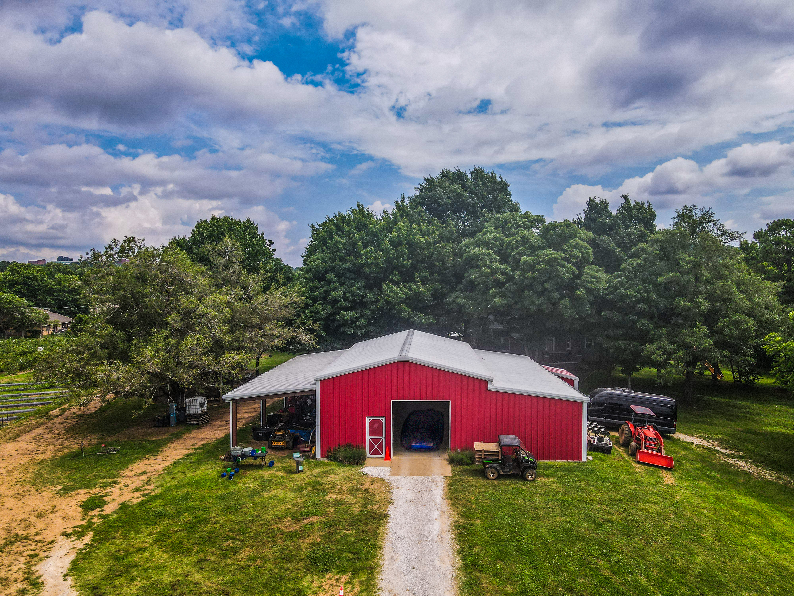

Check What’s Picking
Start with the latest update so you know what is available before you arrive.

Fayetteville, Arkansas
Come walk the rows, pick something fresh, meet a few farm animals, and enjoy a slower kind of day right here in Northwest Arkansas.
Before you come
Every visit is a little different because the farm follows the season. Some weeks are all about strawberries. Others are for berries, pumpkins, mums, and fall traditions. The best way to plan your visit is to check the latest update before heading out.
Availability, picking conditions, and seasonal details can change quickly. Follow the farm on Facebook before your visit for the most current information.
See Facebook UpdatesWhat to expect
The best farm days are easygoing. Bring the family, wear comfortable shoes, and plan to spend a little time outside.
Start with the latest update so you know what is available before you arrive.
Pick your favorites at your own pace and enjoy the farm scenery while you are here.
Take your time, grab a few photos, and enjoy the kind of day families come back for.
A few helpful tips
Farm visits are meant to feel easy. A few simple things will help you make the most of the day.

Right here in Fayetteville
Reagan Family Farm is a local Northwest Arkansas destination for seasonal picking, fresh produce, and simple outdoor family time.

A little more than picking


Good to know
Availability changes with the season. Reagan Family Farm grows strawberries, blueberries, blackberries, raspberries, pumpkins, gourds, mums, cotton, and other seasonal favorites. Check the farm’s Facebook page before visiting for the latest update.
Yes. The farm is designed to be a relaxed, family-friendly outdoor experience. Wear comfortable shoes and plan for grass, dirt paths, and changing weather.
Yes. Because picking conditions and availability can change quickly, checking the latest Facebook update is the best way to plan your visit.

Make a day of it
Check what is in season, gather the family, and make your next farm day part of the tradition.